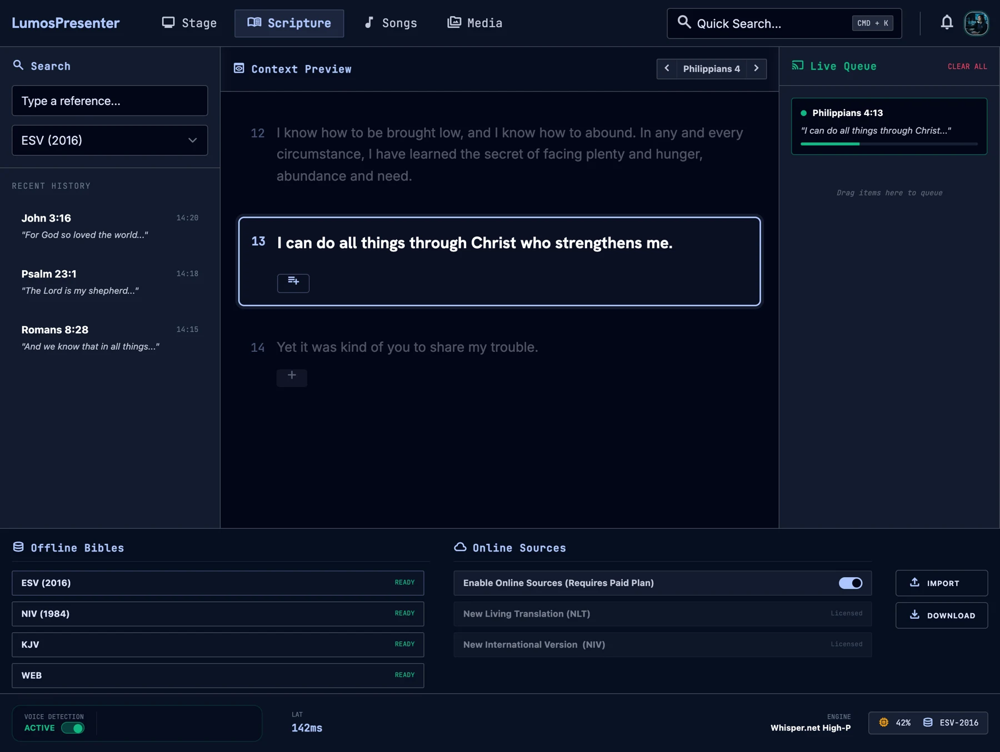

Live listening
Microphone audio is captured, split on voice activity and transcribed locally, with the engine and model switchable from the console.
Speech & presentation · Desktop · Offline-first
Spoken references.
Ready for the screen.
A presentation system that listens to a live sermon, detects spoken Bible references, retrieves the passage from a local database, and puts it on the projector or OBS.

Everything between the preacher's voice and the passage on the screen.
Microphone audio is captured, split on voice activity and transcribed locally, with the engine and model switchable from the console.
A parser turns messy transcripts into references: misheard book names, spoken numbers, and partial references spread across utterances.
KJV, ASV and BSB are bundled in SQLite. NIV, AMP and MSG can be added through api.bible and are cached locally.
A React console to search, preview, confirm and queue passages before they go live.
Each configured display is a web page on the local network, styled per screen and updated instantly.
An Avalonia launcher starts the server, lives in the tray, picks the microphone, and recovers the server if it stops.
Architecture
Hover or tap a component to trace its connections.
Starts and supervises the server, tray, microphone picker
Pipeline, minimal API and the event broadcaster
Search, preview, confirm and queue passages
Microphone input cut into speech at pauses
Local transcription, biased to scripture vocabulary
Finds references across utterances and scores confidence
One styled page per projector or OBS output
Bundled KJV, ASV and BSB for offline use
Optional NIV, AMP and MSG, cached for 14 days
Innovation one
Sticky book and chapter context survives a window of utterances, so a reference split by filler still resolves. An explicit cue can resume the last passage long after.
Innovation two
Every heuristic match carries a confidence score for a confirm gate, because on a live display a false positive costs more than a miss.
Innovation three
Whisper is primed with a vocabulary built from the parser's own book catalogue, so book names and numbers survive transcription.
Technology stack
Next project